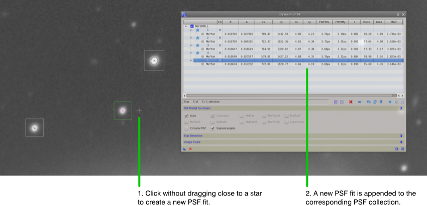
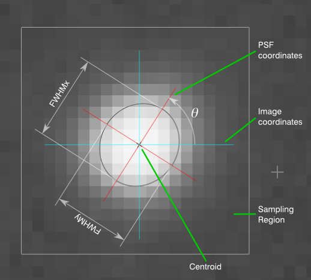
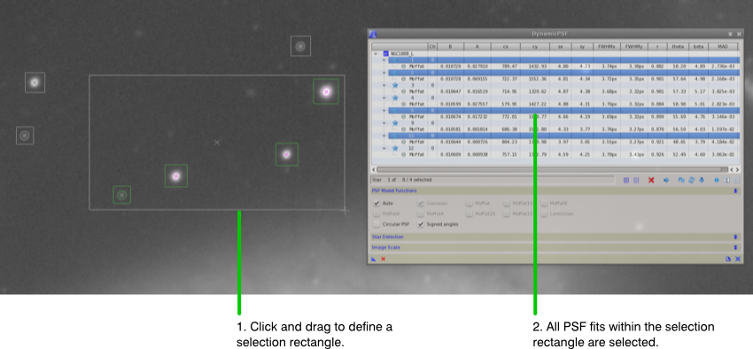
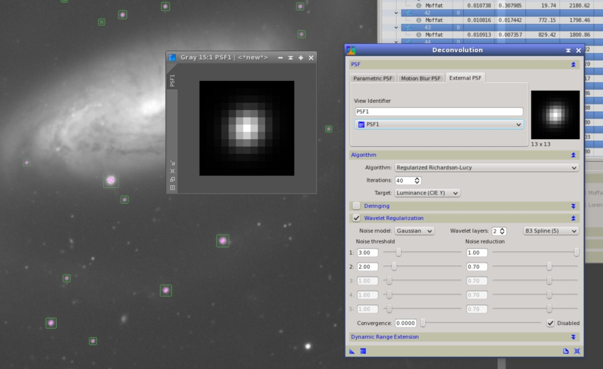
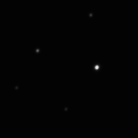

A dynamic tool for interactive PSF fitting. [more]
Categories: Image
Keywords: PSF fitting, PSF modeling, function fitting
[hide]
[hide]
DynamicPSF is a dynamic PixInsight tool for interactive point spread function (PSF) fitting. Although it can be used to model any point-like or relatively bright and isolated image feature, the main purpose of DynamicPSF is to fit mathematical modelling functions to star images. Once a function has been fitted to a selected image structure, DynamicPSF provides a number of useful parameters describing it, such as the coordinates of the object's centroid, mean local background, peak value, dimensions, shape, orientation and estimated quality of the fit, among others.
As most dynamic PixInsight tools, DynamicPSF works in an interactive way using the resources of PixInsight's graphical interface, mainly image views and pointing devices. Typically, the user makes a mouse click on an image and DynamicPSF looks for a star (or a star-like object) around the selected coordinates. If something reasonably similar to a star can be found close to those coordinates, DynamicPSF tries to fit a three-dimensional function from a set of sampled image pixels. This operation can be repeated unlimited times on an unlimited number of images to form a set of PSF collections that can be further analyzed and reused.
The current version of DynamicPSF can fit elliptical Gaussian and Moffat [1] functions. These functions have been selected because their shapes make them particularly suitable to model stellar objects represented on most deep-sky images.
DynamicPSF implements the Levenberg-Marquadt algorithm as a model trust region minimization procedure. Given sampled data consisting of two sets of independent and dependent variables, {x0 … xN–1} and {y0 … yN–1} respectively, the algorithm minimizes the sum of absolute differences of the model function f with the sampled data for a vector a of fitted function parameters:
In this application the independent variables are pairs of pixel coordinates on the image, and the dependent variables are the corresponding pixel values. The underlying implementation is a custom adaptation of the MINPACK library [2] [3] to the PixInsight/PCL framework. Some routines also implement ideas and algorithms from other sources listed in the References section.[4] [5]
An elliptical Gaussian PSF fitting function is defined as:
where the parameters are as follows:
An elliptical Moffat PSF fitting function is defined as:
where the parameters are as in the Gaussian case, and the β exponent controls the overall shape of the fitting function. In the current implementation of DynamicPSF, the β parameter can vary in the range ]0,10]. When β=1, the above equation corresponds to a Lorentzian distribution.
Rotated Functions
DynamicPSF also supports rotated PSF fitting functions. When the difference between σx and σy is larger than or equal to 0.01 pixel (the nominal fitting resolution), DynamicPSF fits an additional θ parameter, which is the rotation angle of the X axis with respect to the centroid coordinates. θ varies in the range [0°,180°[. For a rotated PSF, the x and y coordinates in the equations above must be replaced by their rotated counterparts x' and y', respectively:
Rotation angles are measured in counter-clockwise direction, and can be represented either as unsigned values in the [0°,180°[ range, or as signed quantities in the [–90°,+90°] range. In all cases the functions are fitted to ensure that σx ≥ σy.
Graphical Function Representations
Graphical representations are the best way to understand the geometries of different PSF fitting functions and how they change by varying their parameters. The figure below represents several functions graphically. Two-dimensional representations have been generated by running the following script in PixInsight:
#include <pjsr/UndoFlag.jsh> function filterToImage( filter, id ) { var w = new ImageWindow( 1, 1 ); var v = w.mainView; v.beginProcess( UndoFlag_NoSwapFile ); v.image.assign( filter.toImage() ); v.id = id; v.endProcess(); w.show(); w.zoomToFit(); } #define FILTER_SIZE 101 filterToImage( Matrix.gaussianFilterBySize( FILTER_SIZE ), "Gaussian" ); filterToImage( Matrix.moffatFilterBySize( FILTER_SIZE, 1.5 ), "Moffat_15" ); filterToImage( Matrix.moffatFilterBySize( FILTER_SIZE, 4.0 ), "Moffat_40" ); filterToImage( Matrix.gaussianFilterBySize( FILTER_SIZE, 0.01, 0.5, Math.rad( 45 ) ), "GaussianRotated" );
The script represents four PSF fitting functions (those included in the following figure) as new image windows. This script can be easily modified to represent other Gaussian and Moffat functions with different parameters. Once we have the functions represented as images, the standard 3DPlot script can be used in PixInsight to generate high-quality, three-dimensional renditions.
Full Width at Half Maximum (FWHM)
For all PSF model functions DynamicPSF computes two additional full width at half maximum (FWHM) values:
The FWHM is a well-known, standardized and easy to understand measurement of the size of a star as seen on the image. It is the width in pixels of the fitted function, measured horizontally at half its height. The FWHM on the X axis is given by:
respectively for Gaussian and Moffat fitting functions, with similar expressions for the Y axis by replacing σx with σy. Note that FWHM measurements for Gaussian and Moffat functions are in general not compatible and should not be mutually compared.
For each fitted PSF DynamicPSF provides an estimate of the goodness of fit, or how well the computed PSF function agrees with the actual image pixels that have been sampled to perform the function fitting process. In the current version of DynamicPSF a mean absolute difference (MAD) function is computed for this purpose:
where f represents the fitted function and the Ii elements are the sampled pixels from the original image. The MAD function is intended to provide a robust estimate of the suitability of a model function and its fitted parameters to represent the actual sampled data. MAD estimates should be used to remove outliers from the set of fitted objects during a DynamicPSF session. In this context, outliers correspond to poorly sampled objects, such as saturated or too dim objects, or objects of the wrong type (e.g. nonstellar objects such as small background galaxies) that can contaminate the computed average PSF.
[hide]
You can start a DynamicPSF session in the usual way for dynamic tools in PixInsight: either directly from the Process Explorer window, where you'll find DynamicPSF under the Image category, or from an existing instance of the DynamicPSF process, such as a process icon or a processing history item. When you launch the process, the DynamicPSF interface is shown and activated.
DynamicPSF works with PSF collections. Each collection groups a set of PSF fits performed on a particular image. You can perform an unlimited number of PSF fits on an unlimited number of images. Usually you'll work with a single image, but multiple collections allow you to compare PSF estimates for different images directly in a DynamicPSF session.
The first and largest control on the DynamicPSF interface is a tree box control where the data for all fitted PSF model functions are shown in a hierarchical way. In the first hierarchy level we have PSF collections. There is one PSF collection item for each image involved in the current DynamicPSF session. Each PSF collection can have an unlimited number of star item descendants. Each star item, in turn, has one or more PSF fits performed for the same object, whose parameters are listed in the corresponding rows of the tree box. For color images, each channel is treated as a separate image, so there can be one, two or three PSF fits performed with the same parameters for each nominal channel of a RGB color image.
The following table describes all the data items provided by the current version of DynamicPSF.
Parameter |
Description |
|---|---|
Function type |
Name of the PSF model function. The following functions are supported: Gaussian, Moffat (corresponding to a Moffat function with a variable (that is, automatically determined) beta exponent), Moffat10, Moffat8, Moffat6, Moffat4, Moffat25, Moffat15 (Moffat functions with fixed beta exponents of 10, 8, 6, 4, 2.5 and 1.5, respectively) and Lorentzian (beta=1). |
Ch |
Channel index of this fitted PSF: 0 for grayscale and red, 1 for green and 2 for blue. |
B |
Local background in the [0,1] range. |
A |
Amplitude. This is the peak value of the fitted function, located at the centroid coordinates. |
cx |
Horizontal (X axis) coordinate of the centroid in pixels, in the image coordinate system. |
cy |
Vertical (Y axis) coordinate of the centroid in pixels, in the image coordinate system. |
sx |
Size of the fitted function on the X axis in PSF coordinates, expressed in pixels. This is the σx parameter in the equations for the Gaussian and Moffat functions. |
sy |
Size of the fitted function on the Y axis in PSF coordinates, expressed in pixels. This is the σx parameter in the equations for the Gaussian and Moffat functions. |
FWHMx |
Full width at half maximum on the X axis in PSF coordinates, expressed either in pixels or arcseconds, depending on the current settings in the Image Scale section. |
FWHMy |
Full width at half maximum on the Y axis in PSF coordinates, expressed either in pixels or arcseconds, depending on the current settings in the Image Scale section. |
r |
Aspect ratio. This is the quotient sy/sx. Since sx ≥ sy by design, this parameter is always ≤ 1. |
theta |
Rotation angle of the X axis of PSF coordinates in degrees, with respect to the X axis in the image coordinate system and center in the centroid position. The rotation angle can be shown either as an unsigned quantity in the range [0°,180°[, or as a signed angle in the range [–90°,+90°], depending on the current state of the signed angles option (see the PSF Model Functions section). When signed angles are shown, the counter-clockwise direction is positive and the clockwise direction is negative. |
beta |
The beta exponent of Moffat PSF model functions in the range ]0,10]. |
MAD |
Mean absolute difference between the fitted PSF model function and the actual pixel values in the sampled PSF region. This is an estimate of fitting quality: the smaller this value, the better the achieved function fit. |
For circular functions, the sy, FWHMy, r and theta data items are not provided. For Gaussian functions the beta item is not provided.
A new PSF fitting process is performed when you click on an image and release the pointing device without dragging. If there are no PSF fits for the image where you clicked, a new PSF collection is created. A new star item is then created and appended at the end of the corresponding PSF collection, either a newly created or an already existing collection. Note that, depending on the selected options in PSF Model Functions section, this operation can create one or several PSF fits for the same object. As we have said before, you can repeat this operation unlimited times.
When you click on an image to create a new PSF fit, DynamicPSF automatically looks for the nearest small-scale, bright and concentrated image structure, so you don't have to click at any exact location; just clicking around a star is sufficient. The object detection routine is both robust and stable. It doesn't matter where you click on the image; as far as you click reasonably close to an object of interest, the routine will always converge at the same pixel coordinates and the fitted PSF parameters will always be the same for a given object, irrespective of the initial search location.
Figure 2
For each PSF fit, DynamicPSF generates a set of vector graphics elements on the target image. The PSF coordinate system is rotated by the angle θ with respect to the image coordinate system. In a three-dimensional representation of the PSF model function, the Z axis is perpendicular to the image plane (the XY plane), and Z coordinates correspond to image pixel values. The plotted ellipse represents the intersection between the 3D PSF model function and a plane parallel to the image plane, elevated by half the maximum value of the function. This defines the full width at half maximum on the X and Y directions, FWHMx and FWHMy, respectively.
When working with color images, three PSF fits are created by default for each fitted star, one for each nominal RGB channel (alpha channels are always ignored). You can restrict creation of new PSF fits for a particular channel by selecting it for display on the target image. For example, if you select the green channel (using the channel selector combo box, or pressing Ctrl+Shift+G), only one PSF fit will be created for that channel.
You can select existing PSF fits in several ways:
Selected PSF fits are plotted with a special color on the image (green by default). Note that the current selection is always coherent between the vector graphics plotted on the image(s) and the items in the DynamicPSF interface.
PSF fits can be removed in two ways:
Be careful as item removal operations cannot be undone.
The PSF Model Functions section of the DynamicPSF interface allows you to select one or more PSF model functions to use in new PSF fits. The following options are available:
Auto
Select this option to let DynamicPSF find the best model function for each fitted object. When this option is selected, DynamicPSF fits a Gaussian function and one or several Moffat functions, with variable or fixed β exponent, and selects the function that best reproduces the sampled image data. This is the default option. Note that when this option is selected, the Gaussian and Moffat options (see below) are unavailable.
Gaussian
Select this option to fit Gaussian PSF model functions.
Moffat
Select this option to fit Moffat PSF model functions with variable (that is, fitted) β parameters.
Moffat10, Moffat8, Moffat6, Moffat4, Moffat25, Moffat15, Lorentzian
Select one or more of these options to fit Moffat PSF model functions with fixed β parameters of 10, 8, 6, 4, 2.5, 1.5 and 1.0, respectively (a Lorentzian function is equivalent to a Moffat function with β=1).
Circular PSF
Select this option to fit circular PSF functions. Disable it to fit elliptical functions. An elliptical function provides two separate axes and a rotation angle. In general, elliptical functions are preferable because they provide more information about the true shapes and orientations of the fitted PSFs. Sometimes, however, circular functions may be preferable. For example, strongly undersampled images usually don't provide enough data to fit elliptical functions reliably. Uncertainty due to high noise levels also affects complex function fittings adversely. In such cases a circular function can provide more robust and useful results. Elliptical PSF functions are fitted by default.
Signed angles
When this option is enabled, rotation angles are shown as signed values in the [–90°,+90°;] range. When this option is disabled, rotation angles are represented as unsigned quantities in the [0°,180°[ range. Signed angles are useful to prevent ambiguities introduced by small rotations around zero degrees. These 'oscillatory' rotations occur frequently due to uncertainty in fitting rotation angles for nearly circular stars. For example, imagine a set of PSF fits where we have two subsets with rotations around zero and 180°. If we compute average PSF parameters, the resulting average rotation would be around 90°. This may be incorrect if both subsets are actually due to dispersion caused by fitting uncertainty, in which case the correct average rotation would be a value close to zero degrees. This option is enabled by default.
The Star Detection section provides options to control how DynamicPSF searches and detects stellar objects for PSF fitting:
This parameter determines the size in pixels of the initial search box used to detect stars when you clic on an image. Increase it to favor detection of larger stars. Decrease it to facilitate selection of smaller stars. For example, a smaller search radius may be necessary to deal with dense star fields. The valid range is from one to 127 pixels. The default value of eight pixels is quite appropriate in most cases.
Threshold value for rejection of background pixels, in sigma units. This value is used by the object detection routine to classify sampled pixels into two disjoint sets: pixels belonging to the local background, and pixels belonging to the object being detected. A smaller threshold value makes the star detection routine less sensitive. This can be useful to avoid detection of very faint objects. On the other hand, a higher threshold allows you to isolate very small and faint objects, which may or may not be a good idea, depending on what you want to do and on the image you are working with. This parameter can range from 0.05 to 5 in sigma units. The default value of one sigma is normally appropriate in most cases.
A PSF fitting process uses a square sampling region around the fitted object to gather a set of source image pixels. Then a PSF model function is fitted to minimize the difference with the sampled source pixels. When this option is enabled, DynamicPSF computes optimal sampling dimensions adaptively for each fitted star.
If the sampling region is too small, the local background cannot be determined accurately, and hence the PSF fit will be less accurate. If the sampling region is too large, pixels from nearby objects can contaminate the sample, and computation times grow unnecessarily (bear in mind that they are proportional to the square of the sampling size). The automatic aperture feature of DynamicPSF implements a fast and robust algorithm to find the smallest sampling region necessary to minimize uncertainty in the evaluation of the local background. This option is enabled by default. Disabling it is not recommended under normal working conditions, and can lead to a significant degradation in performance and fitting accuracy.
This section allows you to specify the scale of the image in arcseconds per pixel. When the image scale is available, DynamicPSF represent FWHM values directly in arcseconds, instead of pixels. The following parameters can be used for this purpose:
Scale mode
Defines a method to compute the image scale. Can be one of:
Image scale
When the literal value mode is selected, this control allows you to enter the image scale in arcseconds per pixel. Note that this value will be used for all the images involved in the current DynamicPSF session.
Custom keyword
When the custom FITS keyword mode is selected, this control allows you to enter the name of the special FITS header keyword that provides the image scale in arcseconds per pixel. If the specified keyword is not available, image scale will be ignored and FWHM will be shown in pixel units.
When the Track Stars option is enabled (button pushed), DynamicPSF automatically centers the selected star on its corresponding target image and brings the corresponding view to the top of PixInsight's workspace, if necessary. This is very useful to work at high magnifications, as it frees you from having to zoom in/out and pan the images when you are reviewing a set of PSF fits. This option is disabled by default.
You can regenerate existing PSF fits, which allows you to calculate new PSF parameters after changing some parameters in the PSF Model Functions section. For example, suppose you have generated a number of PSF fits using elliptical functions. Later you decide to fit circular functions for the same stars. You don't need to remove the previous fits and perform the tedious (and error prone) task of redefining new ones; just select the corresponding option (circular functions) and regenerate the PSF fits that you have already defined. You can regenerate in two ways:
The Sort Stars button allows you to sort all the existing PSF fits in ascending order by selectable criteria. When you click this button, the Sort PSF Collections dialog opens as shown below.
On this dialog you can select one of the following sorting criteria:
Sorting your PSF collections is very useful to find and remove outliers in the sets of fitted stars. The most obvious use of this feature is to sort by fitting quality (the default MAD sorting criterion). MAD estimates allow you to easily cut the lists of PSF fits below a given quality limit. However, other sorting criteria can provide more sophisticated ways to detect incorrect PSF fits that may be difficult to evidence otherwise. For example, if you know that your tracking is accurate and hence all of the stars in your image should have nearly circular shapes, then if there are some objects fitted with relatively small aspect ratios—even if they show pretty low MAD values—, they are clearly nonstellar objects or spurious image features that should be removed from your PSF collections.
By clicking the Export Synthetic PSF button, DynamicPSF will generate a new image window with an average PSF computed for the current set of selected PSF fits (you have to select at least one fit for this function to work). Note that the generated PSF image is not the result of averaging all PSF function parameters, but something much more robust and accurate. DynamicPSF generates a synthetic PSF by rendering all fitted PSF model functions superposed by transparency over a black canvas, large enough to accomodate the largest PSF, and all of them centered at their centroid positions. This effectively works as if you had acquired all of the fitted stars centered in the same field of view with multiple exposures of a hypothetical CCD camera, able to accumulate the light from all of them without saturation. The main advantage of this method is that the generated PSF image is almost immune to small variations, and hence very accurate to represent the actual PSF of the image; this quality is what we denote as robustness in this context.
A synthetic PSF is the recommended way to generate a PSF image that can be used with PixInsight's Deconvolution tool as an external PSF. In general, this method provides the best results to deconvolve an image because the obtained PSF is usually very accurate. Achieving similar accuracy by trial and error work with parametric PSFs is a difficult and time consuming task.
DynamicPSF also allows you to read average PSF parameters for the set of selected PSF fits. This is only possible when the selected PSF fits are congruent, that is when the selected set only contains either Gaussian or Moffat modelling functions. When you click the Average PSF Parameters button the Average Star Data dialog opens and shows a list of parameter values calculated by averaging the set of selected fits, as shown in the following screenshot.
The Average Star Data dialog also has a button to generate a new PSF image computed from average parameters. Note that this has nothing to do with the average PSF image generated when you export a synthetic PSF, which is much more accurate and robust.
The comma separated value format (CSV) is a well-known, de facto standard to share data among applications. It is a rather simple format consisting of plain text data items separated with a delimiter, usually a comma character. The fact that virtually all spreadsheet and database management systems support CSV has encouraged us to implement it, as the best way to export fitted PSF parameters that can be further analyzed with other software applications.
CSV files exported by the DynamicPSF tool in PixInsight have the following properties and organization:
The block of text below shows an example CSV file generated with DynamicPSF:
ViewId,StarId,Channel,Function,B,A,cx,cy,sx,sy,FWHMx,FWHMy,unit,r,theta,beta,MAD NGC1808_L,28,0,Moffat,0.010567,0.037276,995.48,1533.27,4.54,4.21,3.69,3.42,px,0.926,50.29,4.53,2.823e-03 NGC1808_L,7,0,Moffat,0.010599,0.027557,1427.22,579.95,4.88,4.31,3.76,3.32,px,0.884,58.90,5.01,2.823e-03 NGC1808_L,22,0,Moffat,0.010589,0.035163,1917.89,1228.73,5.05,4.53,3.79,3.39,px,0.896,52.51,5.27,3.120e-03 NGC1808_L,4,0,Moffat,0.010674,0.017232,1520.77,772.01,4.66,4.19,3.69,3.32,px,0.899,55.69,4.76,3.146e-03 NGC1808_L,30,0,Gaussian,0.011444,0.408243,672.41,706.42,1.70,1.70,4.01,4.01,px,1.000,0.00,0.00,3.206e-03 NGC1808_L,19,0,Moffat,0.010816,0.017442,1798.46,772.15,4.74,4.15,3.75,3.28,px,0.877,57.03,4.77,3.376e-03 NGC1808_L,31,0,Gaussian,0.011924,0.648031,1876.11,380.91,1.67,1.67,3.93,3.93,px,1.000,0.00,0.00,3.386e-03 NGC1808_L,25,0,Moffat,0.010521,0.012280,1220.03,611.32,4.43,4.05,3.65,3.34,px,0.914,55.97,4.42,3.567e-03 NGC1808_L,6,0,Moffat,0.010647,0.016519,1320.62,714.95,4.87,4.38,3.68,3.32,px,0.901,57.33,5.17,3.825e-03 NGC1808_L,32,0,Moffat,0.010511,0.013898,1297.07,424.24,4.66,4.66,3.62,3.62,px,1.000,0.00,4.94,4.928e-03 NGC1808_L,11,0,Moffat,0.010764,0.008830,1437.17,1169.46,4.67,3.98,3.79,3.23,px,0.851,55.29,4.55,5.594e-03
[hide]
The DynamicPSF process can be easily automated via scripting with the PixInsight JavaScript Runtime (PJSR). This allows you to apply a predefined DynamicPSF instance (e.g., as a process icon) to a set of co-registered images of the same region of the sky. This type of batch procedures can be implemented to perform a variety of analysis tasks such as image grading, automated PSF evaluation, seeing and optical performance anaylisis, etc.
To automate DynamicPSF execution, a script must invoke the executeGlobal method of a DynamicPSF instance. By setting appropriate process parameters before this call, the script can force one or more target images and control regeneration of all the PSF fits defined in the instance. DynamicPSF provides the following useful parameters for scripting:
views (Table) |
This table has a single column of string type. Each row in this table specifies the identifier of a target view where the DynamicPSF instance will perform PSF fits. |
stars (Table) |
Each row in this table corresponds to a fitted object. This table has the following columns: |
psf (Table) |
Each row in this table corresponds to a PSF fit. This table has the following columns: |
autoPSF (Boolean) |
Enables the automatic model function feature of DynamicPSF. |
circularPSF (Boolean) |
Fit circular PSF model functions; otherwise fit elliptical functions. |
gaussianPSF (Boolean) |
Fit Gaussian PSF model functions. |
moffatPSF (Boolean) |
Fit Moffat PSF model functions with variable β exponent. |
moffat10PSF (Boolean) |
Fit Moffat PSF model functions with fixed β=10. |
moffat8PSF (Boolean) |
Fit Moffat PSF model functions with fixed β=8. |
moffat6PSF (Boolean) |
Fit Moffat PSF model functions with fixed β=6. |
moffat4PSF (Boolean) |
Fit Moffat PSF model functions with fixed β=4. |
moffat25PSF (Boolean) |
Fit Moffat PSF model functions with fixed β=2.5. |
moffat15PSF (Boolean) |
Fit Moffat PSF model functions with fixed β=1.5. |
lorentzianPSF (Boolean) |
Fit Lorentzian PSF model functions (equivalent to a Moffat function with fixed β=1). |
signedAngles (Boolean) |
Represent rotation angles as signed values in the [–90°,+90°]. Otherwise represent angles in the [0°,180°] range. |
regenerate (Boolean) |
Enable regeneration of all PSF fits defined in the psf table. This will force the DynamicPSF instance to re-search all stars before fitting new PSF model functions. If this parameter is set to false, PSF fits will be recalculated at their original coordinates, which can be faster but less accurate. |
searchRadius (Int32) |
Value of the search radius parameter of DynamicPSF. |
threshold (Float) |
Value of the background threshold parameter of DynamicPSF. |
autoAperture (Boolean) |
Enable the automatic aperture feature of DynamicPSF. |
After execution in the global context, the stars and psf table parameters of the executed instance contain all the information associated with the new PSF fits performed.
The following script is a simple example of DynamicPSF automation. The script creates a new instance of the DynamicPSF process as a duplicate of the instance transported by an existing process icon. The new instance is then initialized to fit circular Gaussian functions for the main view of the active image window. Once executed, the script explores the psf table of the instance to compute a weighted average FWHM estimate for the image. The weighting factors are derived from the computed MAD values for each PSF fit.
/* * An example script to demonstrate automation of the DynamicPSF process. */ // Identifier of the working process icon. #define ICON_ID Process01 // Indexes of the columns in the 'psf' table of DynamicPSF. #define PSF_starIndex 0 #define PSF_function 1 #define PSF_circular 2 #define PSF_status 3 #define PSF_B 4 #define PSF_A 5 #define PSF_cx 6 #define PSF_cy 7 #define PSF_sx 8 #define PSF_sy 9 #define PSF_theta 10 #define PSF_beta 11 #define PSF_mad 12 // FWHM of a Gaussian function function FWHM( sigma ) { return 2.35482*sigma; } // We'll work with the active image window. Make sure we have one. if ( ImageWindow.activeWindow.isNull ) throw new Error( "There is no active image window." ); // Get the instance transported by the specified icon. // *** Requires PixInsight Core >= 1.7.3 var instance = ProcessInstance.fromIcon( #ICON_ID ); // Make sure the icon exists and it is a process icon. if ( instance == null ) throw new Error( "No such process icon: \'" + #ICON_ID + "\'" ); // Make sure the icon transports a DynamicPSF instance. if ( !instance instanceof DynamicPSF ) throw new Error( "The \'" + #ICON_ID + "\' " + "icon does not transport an instance of the DynamicPSF process." ); // Disable the automatic PSF model function feature. instance.autoPSF = false; // We want to fit circular PSF model functions. instance.circularPSF = true; // We only want to fit Gaussian PSF model functions. instance.gaussianPSF = true; instance.moffatPSF = instance.moffat10PSF = instance.moffat8PSF = instance.moffat6PSF = instance.moffat4PSF = instance.moffat25PSF = instance.moffat15PSF = instance.lorentzianPSF = false; // Enable regeneration of all PSF fits. This will force the DynamicPSF instance // to re-search all stars before fitting new PSF model functions. If this // parameter is set to false, PSF fits will be recalculated at their original // coordinates, which can be faster but less accurate. instance.regenerate = true; // Force the instance to work on the active image. We assume this instance has // a single PSF collection. instance.views[0] = ImageWindow.activeWindow.mainView.id; // Execute the instance in the global context. if ( !instance.executeGlobal() ) throw new Error( "Couldn't execute DynamicPSF in the global context." ); // Get the minimum MAD value for normalization. var minMAD = 1; for ( var i = 0; i < instance.psf.length; ++i ) if ( instance.psf[i][PSF_status] == DynamicPSF.prototype.PSF_FittedOk ) if ( instance.psf[i][PSF_mad] < minMAD ) minMAD = instance.psf[i][PSF_mad]; if ( minMAD == 1 ) throw new Error( "No valid PSF fit could be performed." ); console.show(); // List all valid PSF fits and compute a weighted average FWHM. var count = 0; var avgSigma = 0; var sumWeight = 0; console.writeln( "PSF# FWHM MAD weight" ); console.writeln( "==== ====== ========= ======" ); for ( var i = 0; i < instance.psf.length; ++i ) { var psf = instance.psf[i]; if ( psf[PSF_status] == DynamicPSF.prototype.PSF_FittedOk ) { var weight = minMAD/psf[PSF_mad]; console.writeln( format( "%4u %6.2f %.3e %6.4f", i, FWHM( psf[PSF_sx] ), psf[PSF_mad], weight ) ); ++count; avgSigma += psf[PSF_sx]*weight; sumWeight += weight; } } avgSigma /= sumWeight; console.writeln( "" ); console.writeln( format( "Total fitted stars ...... %u", count ) ); console.writeln( format( "Weighted average FWHM ... %.2f px", FWHM( avgSigma ) ) );
[hide]
Figure 3
To the left, a crop of a linear raw CCD image with stars of varied brightness. The 3D rendition below has been generated from the linear data with the 3DPlot script in PixInsight. On a linear image, the disks of all well sampled stars (unsaturated, not too dim stars) have approximately the same diameter, irrespective of their brightness. This happens because the stars, being point sources, are representative of the point spread function (PSF) of the image, which does not depend on light flux.
This is the same crop used above after applying a nonlinear intensity transformation (automatic screen stretch with the ScreenTransferFunction tool). As can be seen on the 3D rendition, nonlinear images don't preserve, in general, the shape and dimensions of the PSF.
Figure 4
An example of wrong use of elliptical PSF model functions. In the set of fitted stars shown on this figure, rotation angles and aspect ratios are inconsistent due to the high noise levels in this raw CCD frame (mouse over the image to see a stretched version). The fitted elliptical functions are meaningless; much more robust and accurate results would be obtained by fitting circular Gaussian or fixed-beta Moffat functions.
[1] Moffat, A. F. J., A Theoretical Investigation of Focal Stellar Images in the Photographic Emulsion and Application to Photographic Photometry, Astronomy and Astrophysics, Vol. 3, p. 455 (1969)
[2] J. J. Moré, B. S. Garbow, and K. E. Hillstrom, User Guide for MINPACK-1, Argonne National Laboratory Report ANL-80-74, Argonne, Ill., 1980.
[3] Frédéric Devernay, C/C++ Minpack Library.
[4] Peter B. Stetson, The Techniques of Least Squares and Stellar Photometry with CCDs (A series of five lectures presented at the V Escola Avancada de Astrofisica, 1989 July 30 - August 3, Aguas de Sao Pedro, Brazil).
[5] William H. Press et al., Numerical Recipes, The Art of Scientific Computing, 3rd Ed., Cambridge University Press, 2007, § 15.5.
Copyright © 2011 Pleiades Astrophoto. All Rights Reserved.